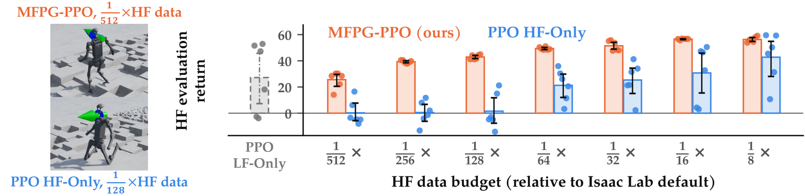
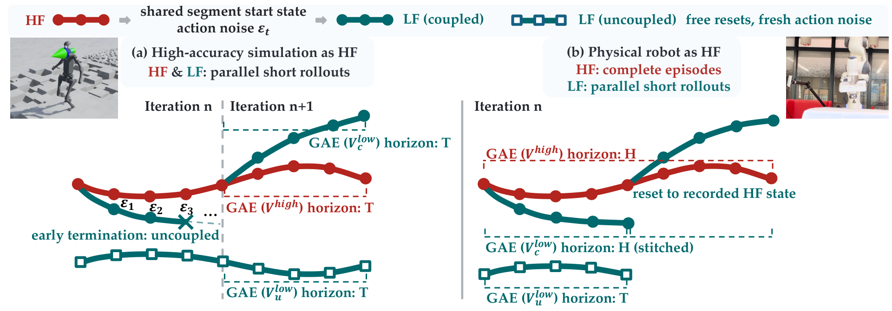
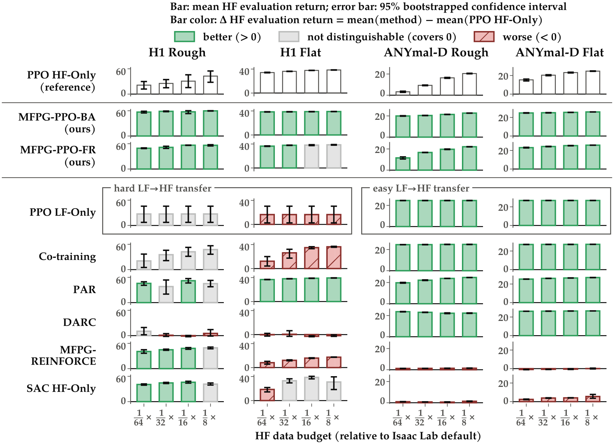
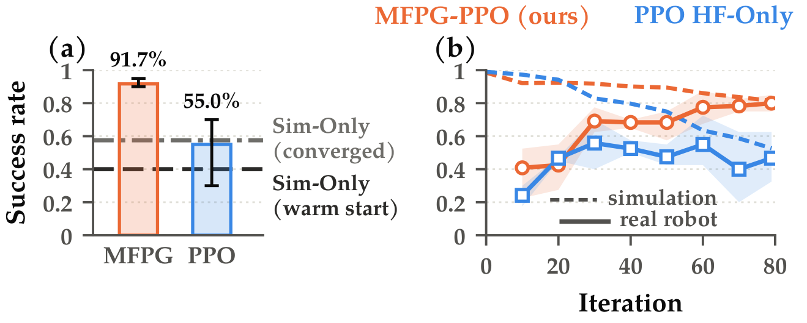

Multi-Fidelity Policy Gradients Stabilize Data-Scarce Reinforcement Learning
Overview
- MFPG-PPO stabilizes data-scarce on-policy RL. It enables stable learning with extremely small per-update batches of target-domain data, e.g., as few as 4 real-robot episodes, or batches up to 512× smaller than in common GPU-simulation RL pipelines.
- The key is access to multi-fidelity data. MFPG-PPO complements limited, expensive high-fidelity (HF) data from the target environment (a physical system or a high-accuracy simulator) with abundant, inexpensive, but biased low-fidelity (LF) data, e.g., from a simplified simulator.
- Learning stays anchored to HF data. Most existing multi-fidelity methods directly optimize biased objectives based on LF data, which can easily degrade performance in the target HF environment. MFPG-PPO instead uses multi-fidelity data in a more reliable way that anchors learning to the HF data.
Challenge
When target-domain data are expensive to collect and therefore scarce, policy gradient methods such as PPO become unstable due to noisy gradient estimates. The figure below shows the performance of PPO (blue) with increasing HF data budgets.

PPO HF-Only policies on H1 Rough
1/512× HF data
1/256× HF data
1/128× HF data
When LF simulation data are also available, exploiting multi-fidelity data requires care, as it can easily bias the policy updates and degrade performance in the target HF environment.
Key Idea
MFPG-PPO constructs a control variate—a correlated auxiliary random variable with a known mean—for the HF policy gradient estimator to improve HF sample efficiency while remaining robust to LF data biases.
MFPG-PPO collects three batches of transitions: a small batch of HF transitions (just as in standard, single-fidelity RL), the same number of coupled LF transitions that serve as “LF twins” of their HF counterparts, and a large batch of independent, uncoupled LF transitions.

Given the three batches of transitions, MFPG-PPO constructs a control-variate policy gradient estimator \(\nabla_\theta L^{\mathrm{MF}}(\theta)\) with
$$\begin{gathered} L^{\mathrm{MF}}(\theta) = \frac{1}{|\mathcal{P}|} \sum_{(k,t) \in \mathcal{P}} \Big[ \hf{X^{\mathrm{high}}_{k,t}(\theta)} + c\, \big( \lf{X^{\mathrm{low}}_{k,t}(\theta)} - \lf{\hat{\mu}^{\mathrm{low}}(\theta)} \big) \Big], \\ \lf{\hat{\mu}^{\mathrm{low}}(\theta)} = \frac{1}{|\mathcal{U}|} \sum_{(k,t) \in \mathcal{U}} \lf{X^{\mathrm{low}}_{k,t}(\theta)}, \end{gathered}$$where \(k\) indexes rollouts and \(t\) their steps, \(\mathcal{P}\) indexes the paired HF and coupled LF statistics, and \(\mathcal{U}\) the uncoupled LF statistics. Each statistic is PPO’s clipped surrogate
$$X_{k,t}(\theta) = \min\Big( \omega_{k,t}\, \hat{A}_{k,t},\; \operatorname{clip}(\omega_{k,t}, 1-\epsilon, 1+\epsilon)\, \hat{A}_{k,t} \Big), \qquad \omega_{k,t} = \frac{\pi_\theta(a_{k,t} \mid s_{k,t})}{\pi_{\theta_{\mathrm{old}}}(a_{k,t} \mid s_{k,t})},$$with advantage estimate \(\hat{A}_{k,t}\) and clipping range \(\epsilon\).
- Coupled LF transitions are used to construct the control-variate term \(c\,\big(\lf{X^{\mathrm{low}}_{k,t}} - \lf{\hat{\mu}^{\mathrm{low}}}\big)\), which reduces the noise in the HF estimate \(\hf{X^{\mathrm{high}}_{k,t}}\).
- Uncoupled LF transitions estimate the LF term’s mean \(\lf{\hat{\mu}^{\mathrm{low}}}\), so the correction is (approximately) zero-mean and learning stays anchored to HF data.
- The coefficient \(c\) is estimated from the collected paired data to match the analytical variance-minimizing solution $$c^* = -\frac{\operatorname{Cov}\big(\hf{X^{\mathrm{high}}}, \lf{X^{\mathrm{low}}}\big)}{\operatorname{Var}\big(\lf{X^{\mathrm{low}}}\big)}.$$
- The higher the Pearson correlation \(\rho\) between the paired statistics, the stronger the variance reduction: $$\begin{gathered} \rho = \frac{\operatorname{Cov}\big(\hf{X^{\mathrm{high}}}, \lf{X^{\mathrm{low}}}\big)}{\sqrt{\operatorname{Var}\big(\hf{X^{\mathrm{high}}}\big) \operatorname{Var}\big(\lf{X^{\mathrm{low}}}\big)}}, \\ \operatorname{Var}\Big[\hf{X^{\mathrm{high}}} + c^*\big(\lf{X^{\mathrm{low}}} - \lf{\mu^{\mathrm{low}}}\big)\Big] = \big(1-\rho^2\big) \operatorname{Var}\big[\hf{X^{\mathrm{high}}}\big]. \end{gathered}$$ A perfect LF simulator (\(\rho = 1\)) would entirely remove the variance in the HF estimate.
Key Results
How does MFPG-PPO scale with HF data scarcity?
MFPG-PPO policies on H1 Rough
1/512× HF data
1/256× HF data
1/128× HF data
How do different uses of LF data scale across tasks and HF budgets?
We compare MFPG-PPO with different baselines on Isaac Lab robot locomotion tasks, where the multi-fidelity environments are simulations with physics of different accuracy:
- PPO HF-Only uses no LF data.
- Co-training (Wei et al., 2025) pools HF and LF data.
- DARC (Eysenbach et al., 2021) and PAR (Lyu et al., 2024) correct LF rewards.
- PPO LF-Only uses no HF data.
- MFPG-REINFORCE (Liu et al., 2026) uses control variates.
- We additionally compare to an off-policy baseline, SAC HF-Only (Haarnoja et al., 2018).
Each baseline matches the data budget of MFPG-PPO at each fidelity it consumes.

Does MFPG-PPO learn stably on a real robot?
